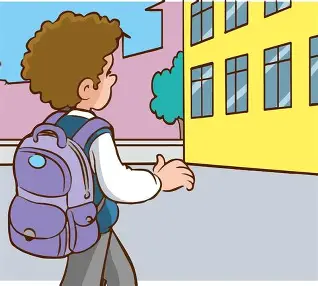

Sobre mí
Soy Cristopher actualmente curso el ultimo año de carrera de Perito en informática, vivo en la Bethania Zona 7, tengo un hermano menor, me gusta mucho el futbol y hacer ejercicio por que me ayudan a mantenerme activo, me interesa aprender cosas nuevas todo el tiempo, mas cuando tienen que ver con la tecnología y la informatica.
Expectativas para este año
Para este año educativo espero aprender cosas nuevas, poder encontrar una buena empresa para poder hacer mis practicas, mejorar mis habilidades técnicas y crecer tanto a nivel académico como personal, tambien poder entender muchas cosas que aun no entiendo de mi carrera y poder mejorar mis notas y por ultimo poder graduarme.
Tiempo de dedicación a los estudios

Planeo dedicar practicamente la mayor parte de mi tiempo a mis estudios, siempre organizando bien mi tiempo para cumplir con mis responsabilidades tanto en el hogar como académicamente.